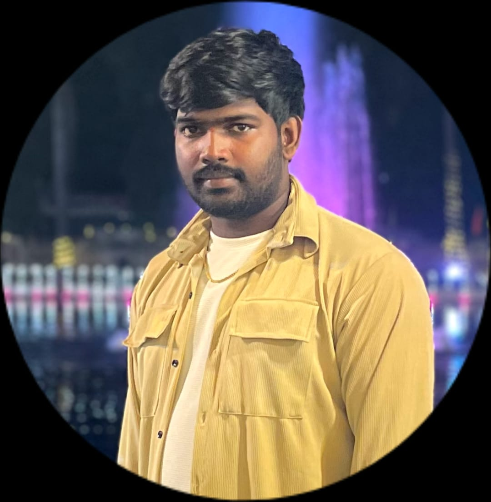

Puthineedi Ganesh
I'm a Designer
Hello, and welcome to my portfolio! I’m Puthineedi Ganesh, a passionate and dedicated designer with a flair for creating unique, visually appealing, and user-friendly web experiences. As you navigate through my website, you’ll get a closer look at my work, my design philosophy, and the projects that I’ve poured my heart into over the years.
Explore My Work